완성된 게임 미리 보기
발표자는 결과물부터 보여 줘요. 게임 이름은 Stormfield Fighters예요. 닌자 관중이 둘러싼 밤의 풀밭 아레나에서 캐릭터 넷 중 하나를 골라 펀치·킥·콤보로 싸워요. 비가 오는 폭풍 속이라 아레나에 번개도 떨어져요. 발표자가 처음부터 내건 목표는 'AI 슬롭'처럼 보이지 않는, 완성도 있는 게임이었어요.
아래는 4인 난투 장면이에요. 화면 위쪽에 Ryo·Mina와 Kage·Brawn 네 명의 체력 바가 있고, 오른쪽 위에 '2 HITS Combo!' 같은 콤보 표시가 떠요. 맨 아래 줄에는 'WASD' 이동, J 펀치, K 킥, L 막기, U 필살기, I 슈퍼라는 조작키가 적혀 있어요.
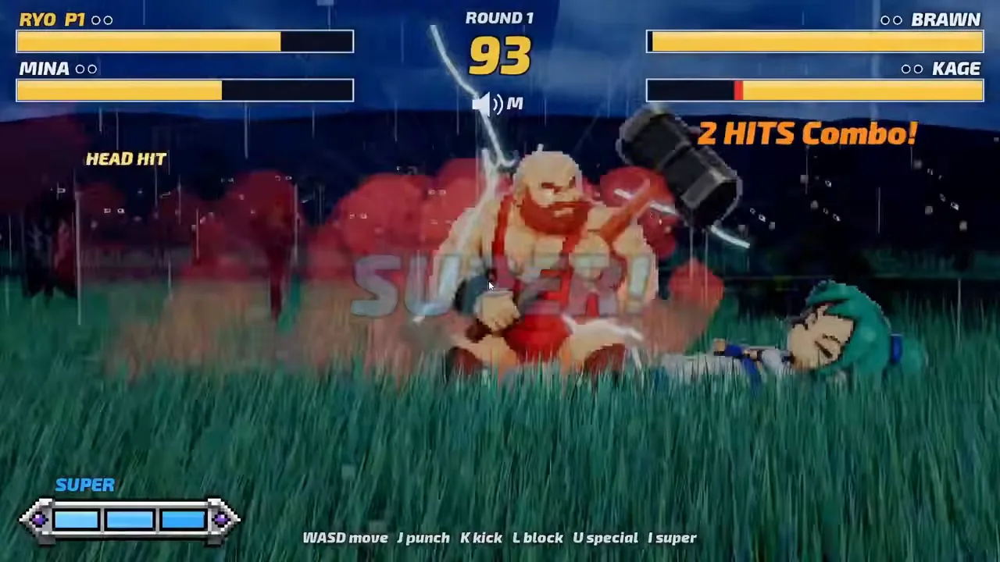
메인 메뉴는 'FIGHT', 'Test Your Storm', 'SETTINGS', 'QUIT' 네 개예요. 'FIGHT'를 누르면 캐릭터를 고르고 1 vs CPU(Central Processing Unit)나 4인 난투(4 Way Brawl) 중 하나를 골라요. 메뉴 배경도 바람에 흔들리는 풀밭이라 게임 분위기를 그대로 이어 가요.
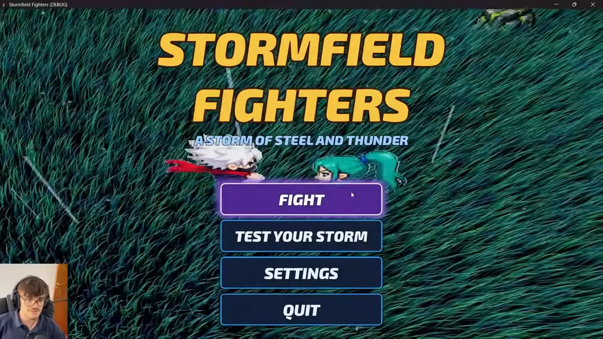
대전 중에는 바닥의 물건을 집어 던질 수 있어요. 아래 장면에서는 CPU가 던진 횃불 때문에 아레나 가장자리를 따라 불길이 번지고 있어요. 발표자는 이 장면에서 "횃불을 던졌다"며 놀라는데, 이 불길과 번개가 2차 버전에서 넣은 기능이에요.
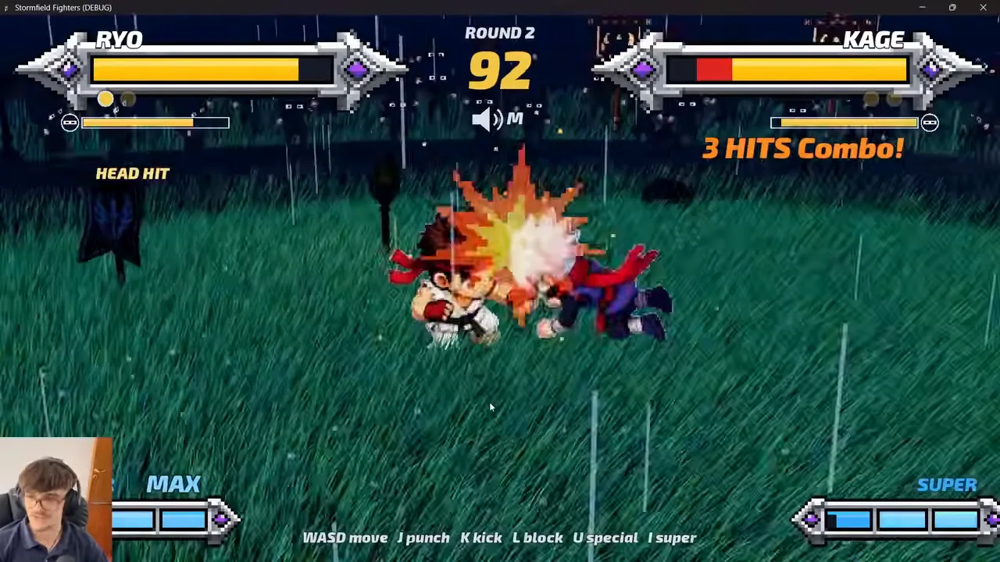
Test Your Storm은 연타 미니게임이에요. 오른쪽 세로 게이지를 빠르게 눌러 빨간 선 위까지 채우면 돌판이 부서지고, 제때 못 채우면 번개를 맞아요. 아래 화면은 3단계 중 2단계 '5 STONE SLABS'를 23번 연타로 깬 순간이에요.
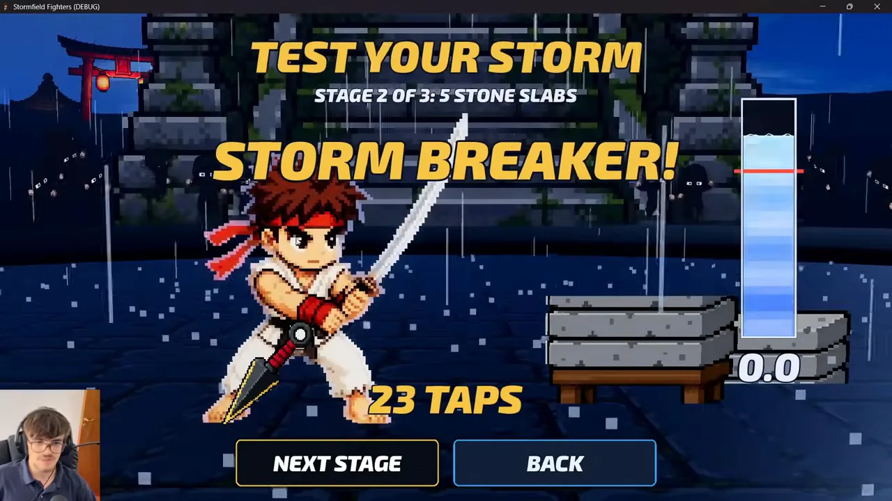
발표자는 격투 게임이 스프라이트 애니메이션에서 특히 어려운 장르라고 짚어요. 동작 수가 많고, 하나하나 품질도 좋아야 하기 때문이에요. 이 영상에서 그 그림을 전부 AutoSprite로 만들었다는 게 이야기의 출발점이에요.
출발점: AutoSprite 팀의 웹 게임
이 게임은 AutoSprite라는 스프라이트 생성 서비스를 만든 팀의 웹 게임에서 시작했어요. AutoSprite 사이트 첫 화면에는 캐릭터 하나를 8방향 아이소메트릭 애니메이션으로 바꿔 주는 기능이 소개돼 있어요. 가운데 캐릭터를 둘러싼 아홉 칸이 방향별 모습이에요.
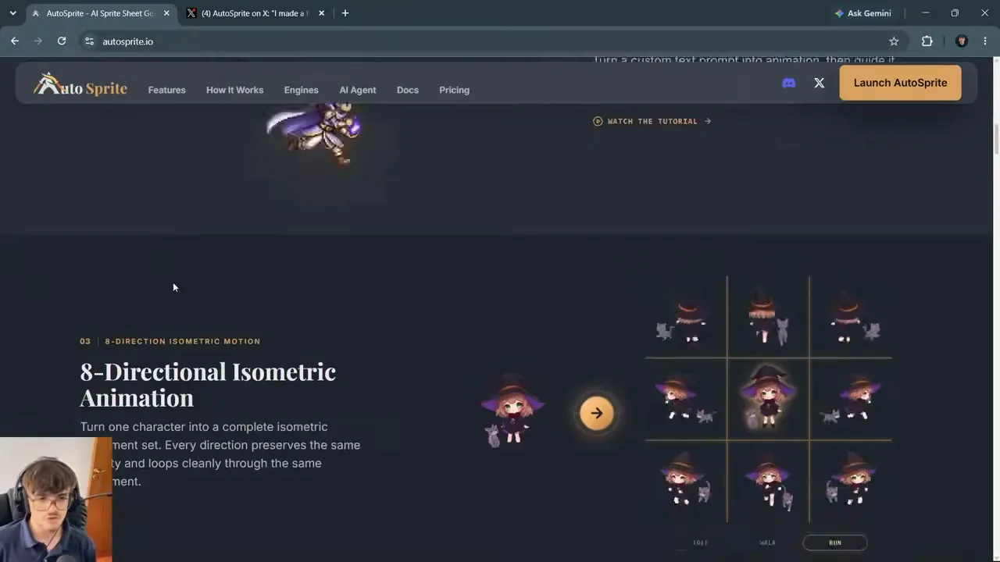
AutoSprite 공식 X 계정은 2026년 10월 8일에 "한 시간 안에 격투 게임을 만들었다"는 글을 올렸어요. 본문에는 AutoSprite Brawlers의 모든 캐릭터·공격 애니메이션이 AutoSprite MCP에서 나왔고, AI 에이전트에게 동작을 요청하기만 하면 된다고 적혀 있어요. 영상 속 캐릭터 이름은 Sora와 Nyx예요.
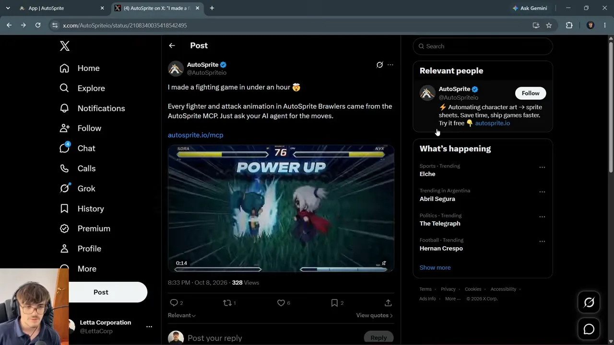
첫 지시: 기획부터 맡기기
작업은 'Autosprite - Ideation'이라는 Claude Code 세션에서 시작해요. 오른쪽 아래에 Opus 5.5, High가 보여요. 첫 메시지는 "다음 AutoSprite 프로젝트를 시작하자, 뭐가 필요해?"였고, 이어서 빈 프로젝트·GDD(Game Design Document)·콘셉트 이미지를 만들고 게임 영상을 내려받으라고 했어요.
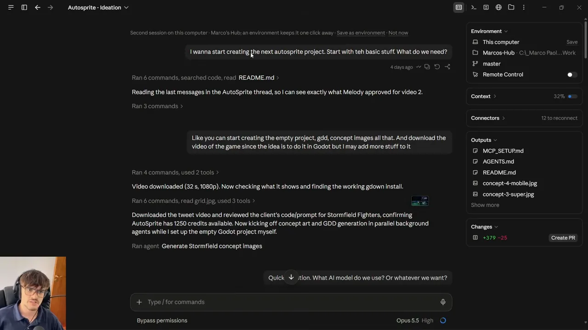
MCP_SETUP.md, AGENTS.md, 콘셉트 이미지가 쌓여요. 영상 04:12에서 보기AutoSprite 팀은 웹 게임의 소스 코드와 플레이 링크도 넘겨줬어요. 웹 버전의 캐릭터 선택 화면에는 Kaito·Sora·Bruno·Nyx 넷이 있고, '1 VS CPU'와 '4-WAY BRAWL' 모드가 보여요. 기본 시스템은 이미 있으니 Godot 프로젝트로 옮기는 게 일이었어요.
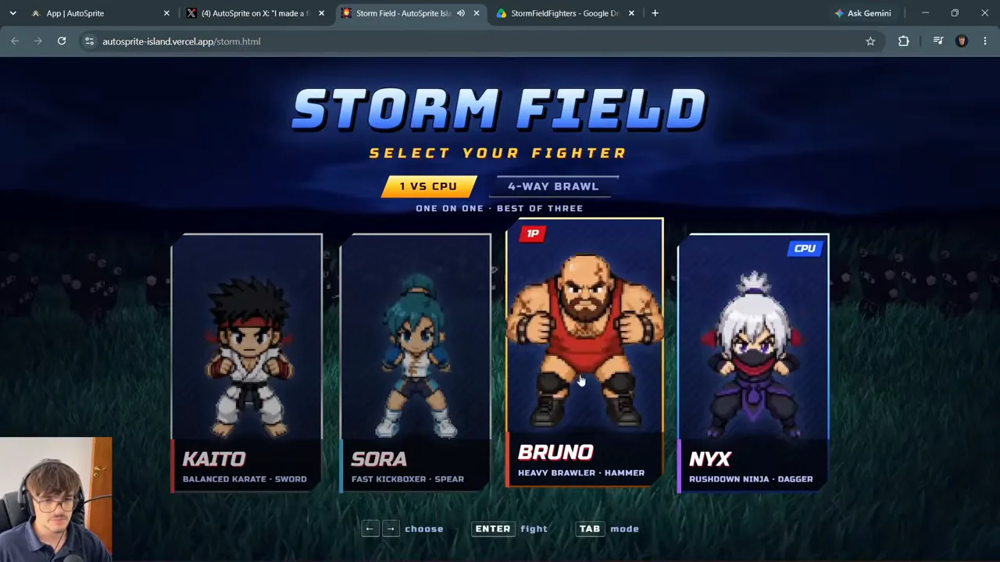
팀이 실제로 Claude Code에 붙여 넣은 프롬프트도 공개됐어요. 제목은 'Storm Field: the one prompt'예요. 첫 줄에서 three.js + Vite + TypeScript로 완전한 3D 격투 게임을 만들라고 하고, 'THE LOOK' 항목에서 밤의 풀밭, 닌자 관중 링, 3D 세계에 선 2D 픽셀 스프라이트, 8방향 시점, 클래식 격투 게임 HUD(Heads-Up Display)를 차례로 요구해요.
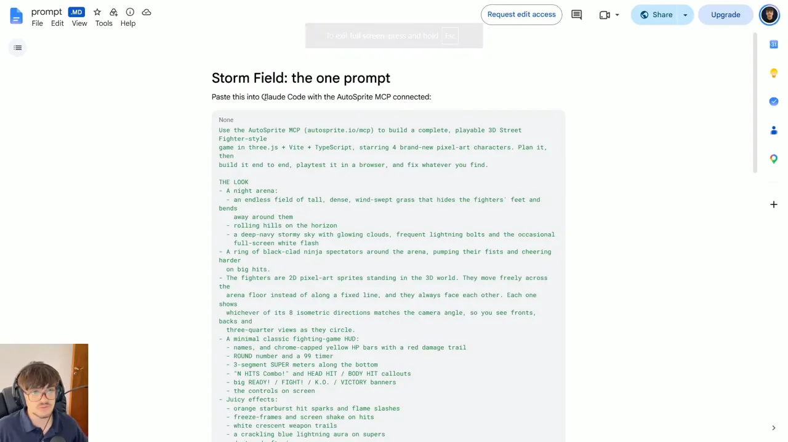
세팅: Godot AI MCP와 AutoSprite MCP
세팅은 도구 두 개를 Claude에 연결하는 게 전부예요. 하나는 Godot 에디터를, 하나는 AutoSprite를 Claude가 직접 다루게 해 줘요. 나중에 콘셉트 이미지를 그릴 때는 Codex CLI가 하나 더 붙어요. 전체 구조를 한 장으로 그리면 이래요.
flowchart LR U["발표자의 지시"] --> C["Claude Code (Opus 5.5)"] C -->|"Godot AI MCP"| G["Godot 에디터: 씬·노드·스크립트"] C -->|"AutoSprite MCP"| A["AutoSprite: 캐릭터·애니메이션·스프라이트 시트"] C -->|"Codex CLI"| X["콘셉트 이미지"] A --> G
Godot AI MCP 설치
Godot 에디터 위쪽의 Asset Store에서 'godot ai'를 검색하면 Godot AI 플러그인이 나와요. 상세 창의 설명은 Claude Code, Codex, Antigravity 같은 MCP 호환 AI 도우미를 실행 중인 Godot 에디터에 연결해 준다는 내용이에요. 노드·씬·UI(User Interface)를 만들고, 스크립트를 붙이고, 애니메이션과 머티리얼을 만들고, 테스트를 돌리는 일을 대화로 할 수 있다고 적혀 있어요. 라이선스는 MIT(Massachusetts Institute of Technology)예요.
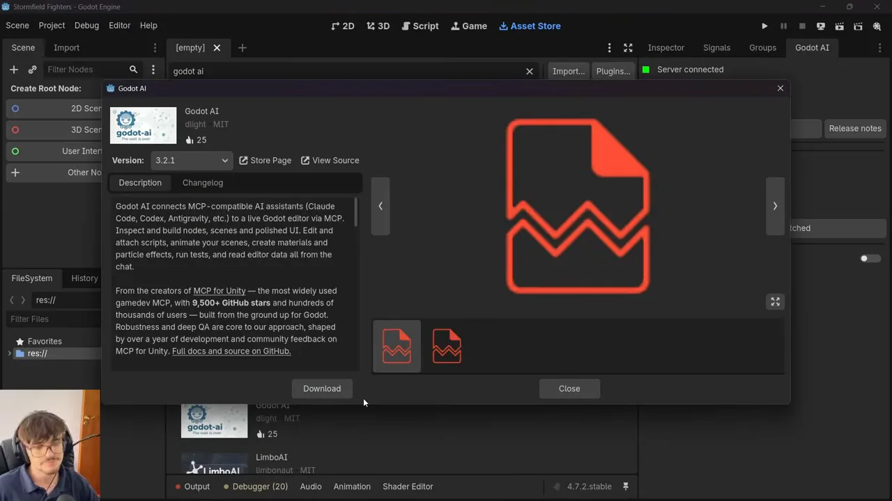
내려받은 뒤 Project → Project Settings → Plugins에서 켜면 오른쪽에 Godot AI 패널이 생겨요. 아래 화면 맨 위의 초록 점 'Server connected'가 연결됐다는 표시예요. 설치 버전 v4.3.0 아래에 v4.3.1 업데이트 알림이 떠 있고, 그 아래 Clients 줄에서 어떤 AI 클라이언트에 연결할지 설정해요. 에디터 버전은 오른쪽 아래의 4.7.2.stable이에요.
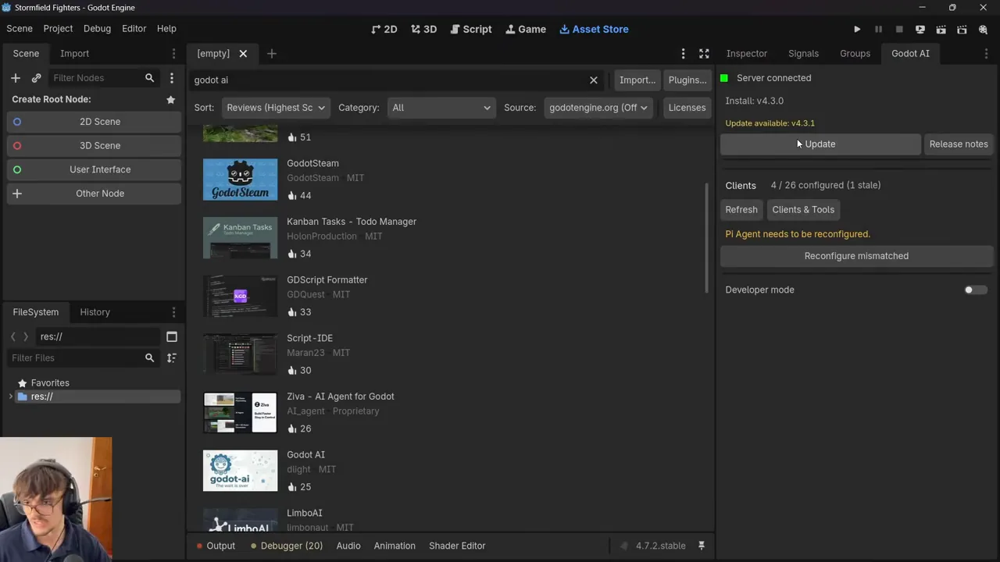
AutoSprite MCP 연결
AutoSprite 사이트의 Developers → MCP 페이지에는 코딩 에이전트에 붙여 넣을 프롬프트가 있어요. 1번은 MCP 서버 추가인데 Claude Code용 claude mcp add 명령, Codex용 명령, 그 밖의 도구용 원격 HTTP(HyperText Transfer Protocol) 주소가 나란히 있어요. 2번은 브라우저 로그인 방법, 3번은 get_account를 불러 준비됐는지 알려 달라는 요청이에요.
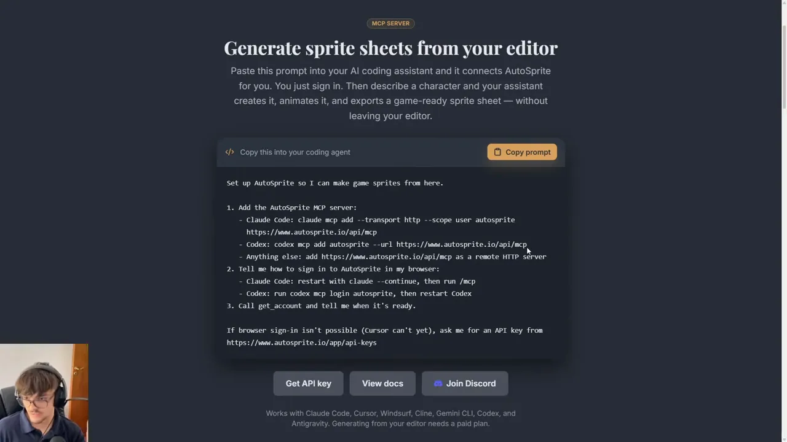
브라우저 로그인이 안 되는 환경이면 API(Application Programming Interface) 키를 써요. 'Your API & MCP keys' 페이지에서 이름을 붙여 키를 만들고 Claude에 넘기면 돼요. 같은 키를 REST(Representational State Transfer) API와 MCP 양쪽에 쓸 수 있다고 적혀 있어요. 발표자는 전체 과정이 30초도 안 걸린다고 해요.
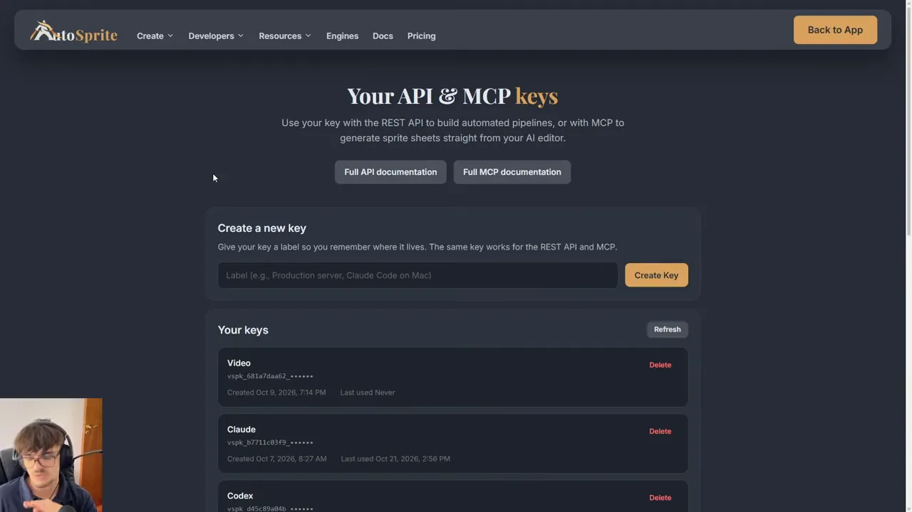
Claude가 만든 그림 확인하기
연결이 끝나면 Claude가 AutoSprite 도구를 직접 불러 캐릭터와 애니메이션을 만들어요. 결과는 AutoSprite 사이트에서 볼 수 있어요. 왼쪽 목록에 ninja_fan, kage, brawn, mina, ryo가 있고, 가운데는 brawn의 걷기(Walk) 스프라이트 시트, 오른쪽은 숲 배경에서 돌려 본 미리보기예요. 'Perfect loop'에 체크돼 있고 프레임 크기는 128×128이에요.
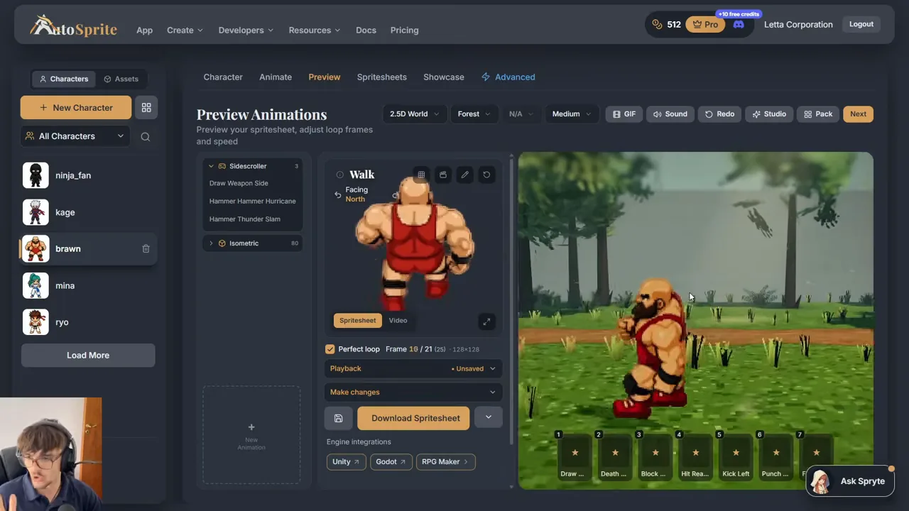
Spritesheets 탭에서는 동작별 시트를 한꺼번에 볼 수 있어요. 위쪽은 해머 공격(Hammer…), 무기 꺼내기(Draw Weap…) 같은 필살 동작이고, 아래 Isometric 묶음은 Walk Up, Walk North, Walk Right, Walk South처럼 방향마다 따로 만든 걷기 시트예요.
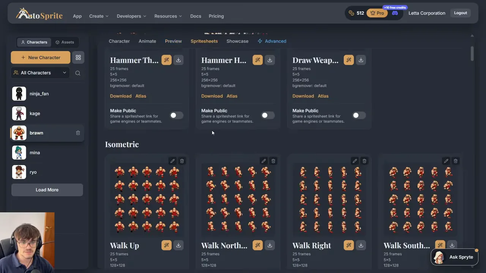
1차 버전: 3D 무대 위의 2D 캐릭터
얼마간 작업한 끝에 1차 버전이 나왔어요. 목표는 웹 게임과 비슷하되 더 다듬는 것이었어요. 발표자가 가장 마음에 들어 한 건 2.5D 구조예요. Godot 에디터에서 arena 씬을 열면 왼쪽 씬 트리에 Ground, GrassField, Hills, CrowdRing, ToriiGate, Shrine, WarBanner1~5가 보여요. 화면 속 풀밭과 언덕, 둘러선 관중, 붉은 도리이 문이 모두 진짜 3D 오브젝트예요.
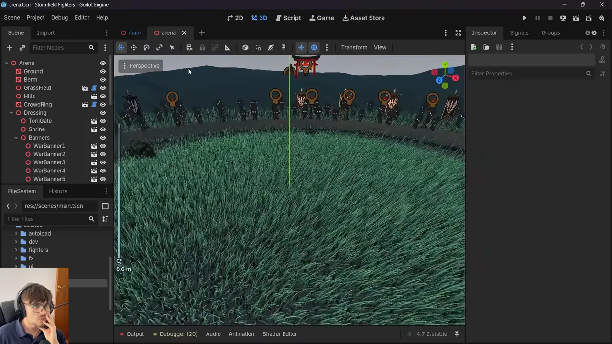
캐릭터 선택 화면에는 Ryo, Mina, Brawn, Kage 네 명이 있어요. 아래쪽 '4 WAY BRAWL'은 아직 'LOCKED'예요. 4인 난투는 발표자가 2차 버전에서 떠올려 GDD에 추가한 기능이라서 그래요. 왼쪽 위 상자에는 1차 버전에 걸린 시간 2시간 43분과 Claude 사용량 약 5%가 적혀 있어요.
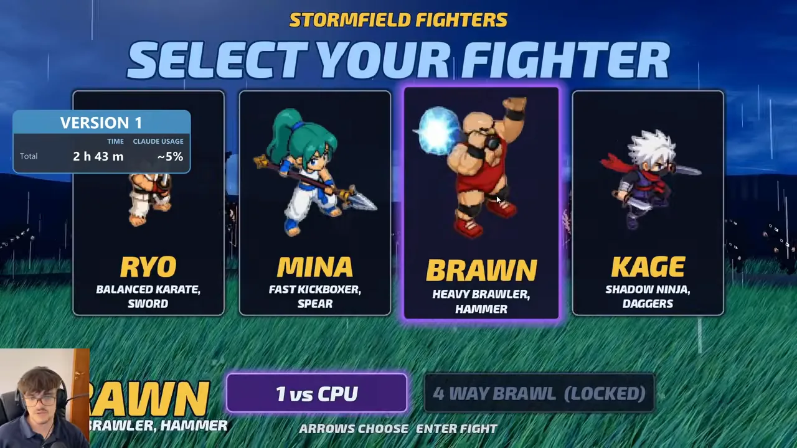
GDD에 무엇이 들어 있었나
Claude가 쓴 GDD의 첫 장은 'Stormfield Fighters: Build GDD'예요. 요약 문단에 Godot 4.7.2로 만드는 2.5D 일대일 격투 게임이고, 모바일 우선(가로 화면, 터치 조작)이며 PC(Personal Computer) 키보드·게임패드도 지원한다고 적혀 있어요. 아래 이미지는 '콘셉트 1'로, 번개 아래 Ryo가 Kage에게 칼 필살기를 넣는 장면이에요.
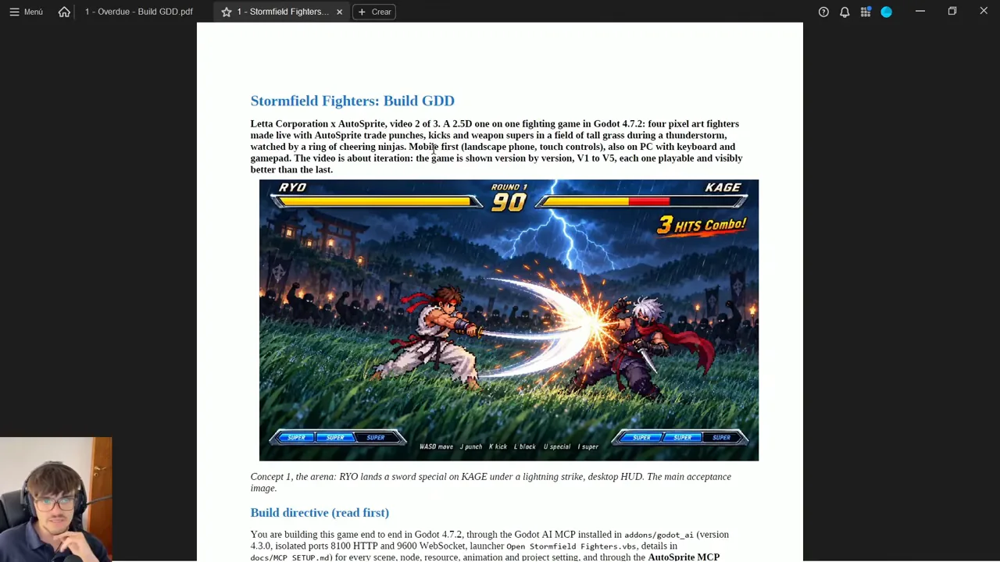
소스 코드를 받았기 때문에 GDD에는 캐릭터별 정보가 처음부터 들어 있었어요. 2.2 The roster 표를 옮기면 이래요.
| 캐릭터 | 유형 | 무기 | 강조 색 |
|---|---|---|---|
| Ryo | 균형형 가라테 | 칼(카타나) | 빨강 |
| Mina | 빠른 킥복서 | 창 | 청록 |
| Brawn | 거구 난투가 | 워해머 | 진홍 |
| Kage | 돌진형 그림자 닌자 | 쌍단검 | 보라 |
| 닌자 관중 | 관중 | 없음 | 없음 |
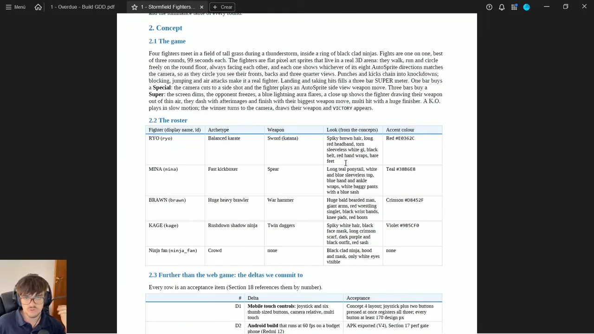
발표자가 웹 게임에 없던 것으로 가장 먼저 꼽은 건 모바일이에요. GDD의 모바일 HUD 콘셉트를 보면 왼쪽 아래에 조이스틱이, 오른쪽 아래에 펀치·킥·막기·점프·필살기·슈퍼 버튼이 둥글게 모여 있어요.
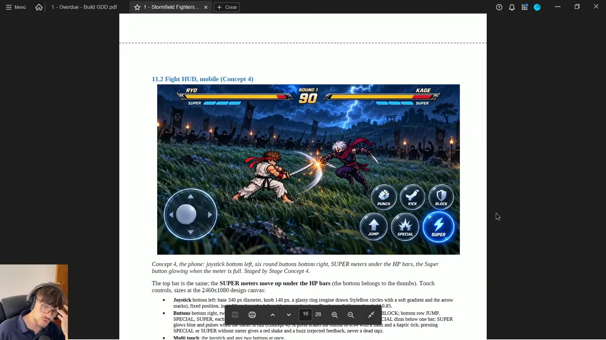
GDD에는 AutoSprite 에셋 계획도 있어요. 14.4 Worklist 표에 캐릭터마다 AutoSprite에 넣을 기본 프롬프트가 적혀 있고, 그 아래 '캐릭터당 팩 10개, 8방향, 25프레임, 128px'라는 규격과 동작 목록(fight_stance, walk, run, punch, kick, hit_react, block, jump…)이 이어져요.
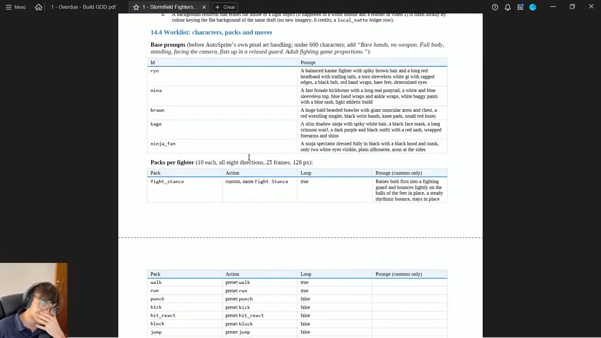
플레이해 보니
1차 버전에서도 펀치, 킥, 필살기, 슈퍼가 모두 동작했어요. 아래는 Brawn과 Mina의 대결이고, 왼쪽 아래에 3칸짜리 슈퍼 게이지가 보여요. 다만 한때 카메라가 캐릭터를 놓쳐 화면에 아무도 안 보이는 문제가 있었어요. 발표자는 작은 오류가 있었지만 게임 로직은 다 갖춰졌다고 평가해요.
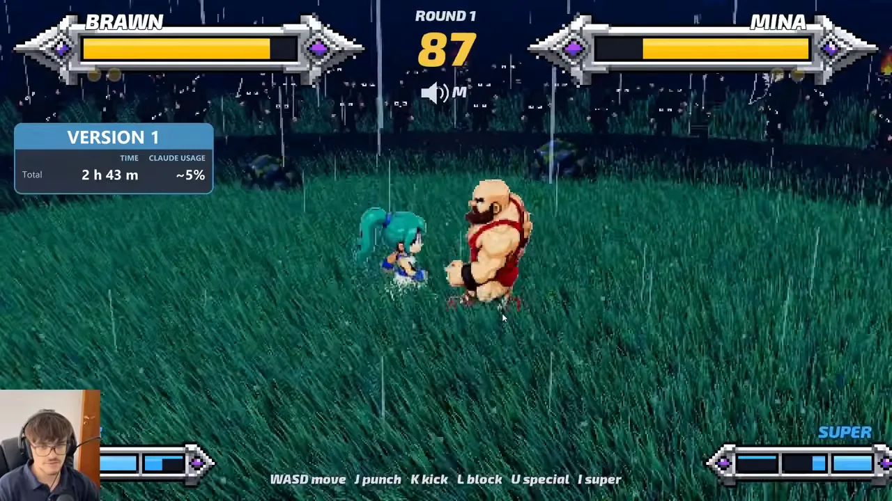
이어서 Godot 1차 버전과 원래 웹 게임을 나란히 놓은 비교 화면이 나와요. 왼쪽이 'GODOT: VERSION 1', 오른쪽이 'ORIGINAL WEB GAME'이에요. 둘 다 같은 해머 캐릭터가 비슷한 HUD 아래 싸우고 있어요.
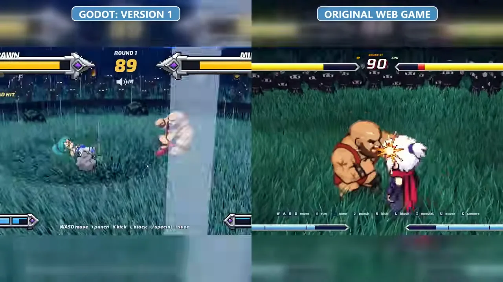
7가지 새 기능을 제안받기
다음 버전에 앞서 발표자가 먼저 고치게 한 건 에디터 화면이에요. 게임은 잘 돌았지만 에디터에서 씬을 열면 엉망으로 보였고, 영상으로 보여 줄 에디터도 깔끔해야 했기 때문이에요. 고친 뒤의 main 씬은 3D 뷰에 풀밭, 관중, 도리이 문, 두 캐릭터가 게임 화면처럼 보여요.
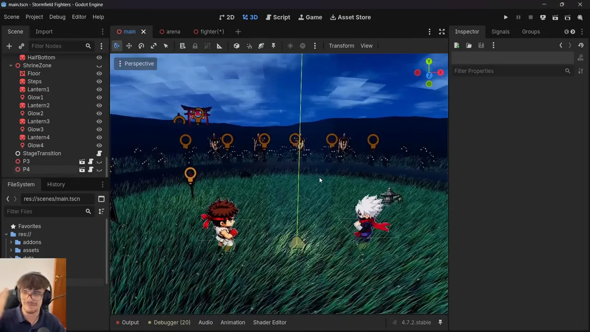
제안을 받는 프롬프트
그다음 보낸 메시지가 이번 영상에서 가장 눈여겨볼 지시예요. 아래 화면의 메시지는 다섯 문단이에요. 공개 아티팩트를 만들 것, 그림과 함께 7개의 추가 기능을 제안할 것, 상점 업그레이드처럼 흔한 건 빼고 모탈 컴뱃처럼 집어 던지는 소품이나 환경 위험을 넣을 것, 힘 겨루기 미니게임도 넣을 것, 격투 장르를 조사할 것. 마지막 문단은 실제 게임 화면과 그 위에 그린 콘셉트 이미지를 넣고, Codex를 써도 되니 사이트 끝에 어떻게 썼는지 설명하라는 요구예요.
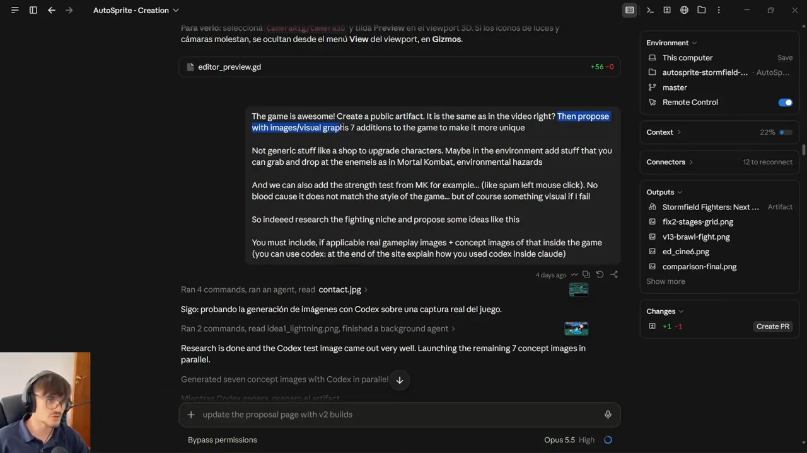
발표자가 보낸 메시지에서 원하는 방향을 짚은 대목은 이래요.
Not generic stuff like a shop to upgrade characters. Maybe in the environment add stuff that you can grab and drop at the enemies as in Mortal Kombat
캐릭터 업그레이드 상점 같은 흔한 건 말고요. 모탈 컴뱃처럼 환경에 집어서 적에게 던질 수 있는 걸 넣는다든지요.
— 영상 10:26 (화면 속 메시지)
아티팩트로 정리된 7가지 제안
Claude는 조사를 마친 뒤 Codex로 실제 캡처 위에 콘셉트 이미지를 그리고, 결과를 'Stormfield Fighters: Next Storm'이라는 공개 아티팩트로 만들었어요. 발표자는 시크릿 창에서 열어 로그인 없이 누구나 볼 수 있다는 걸 보여 줘요. 영상 속 페이지는 이미 구현이 끝난 뒤의 모습이라, 첫 문단에 7개가 모두 V6~V12 버전으로 게임에 들어갔고 각각 프로브로 검증됐다고 적혀 있어요.
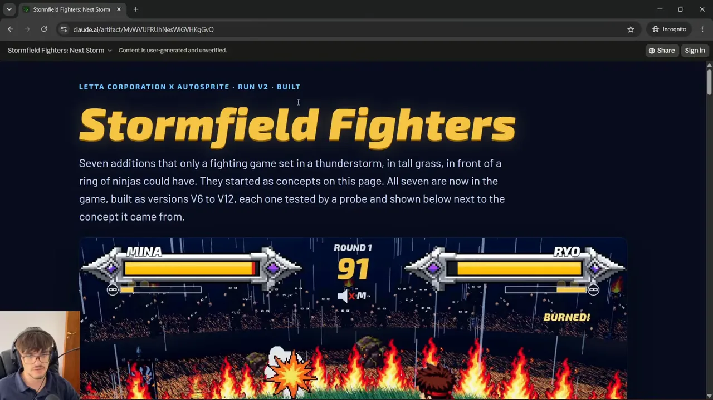
일곱 가지를 정리하면 이래요. 이름과 내용은 영상 속 설명과 아티팩트 화면을 따랐어요.
| # | 이름 | 무엇이 일어나나요 | 참고한 게임 |
|---|---|---|---|
| 1 | Strike Zones (V6) | 폭풍이 14~22초마다 아레나에 원을 표시하고, 1.3초 뒤 그 자리에 번개가 떨어져요 | — |
| 2 | Thunderstruck (V7) | 체력 300 이하일 때 경기당 한 번, 다음 슈퍼가 공짜예요 | — |
| 3 | Ninja Crowd (V8) | 링 가장자리로 밀린 캐릭터를 닌자들이 다시 밀어 넣어 콤보가 이어져요 | — |
| 4 | 소품 집어 던지기 | 바위 같은 아레나 소품을 집어 상대에게 던져요 | 모탈 컴뱃 |
| 5 | Wildfire (V10) | 횃불을 던지면 풀밭에 불이 번져요 | — |
| 6 | Test Your Storm | 연타로 게이지를 채워 돌판을 부수는 미니게임이에요 | 모탈 컴뱃 |
| 7 | Through the Torii (V12) | 경기당 한 번 슈퍼 피니셔로 상대를 날리면 다른 아레나로 바뀌어요 | 인저스티스 |
각 제안 칸은 왼쪽에 실제로 구현한 화면('BUILT'), 오른쪽에 처음 제안했던 콘셉트('CONCEPT')를 놓는 식이에요. 첫 번째 Strike Zones를 보면 왼쪽 실제 게임에서는 풀밭 위 원이 푸르게 빛나고, 오른쪽 콘셉트에는 'STRIKE ZONE'이라는 글자와 함께 원 안에서 칼을 휘두르는 장면이 그려져 있어요.
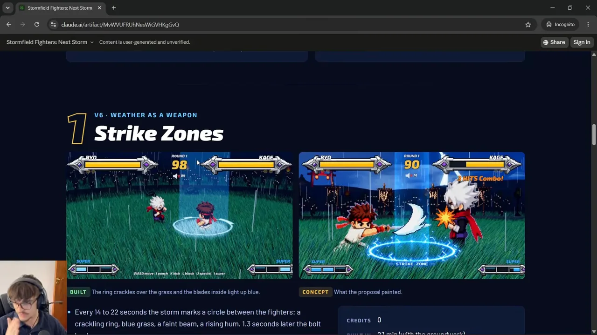
두 번째 Thunderstruck는 두 칸 모두 'BUILT'예요. 왼쪽은 체력이 바닥난 상태에서 공짜 슈퍼가 터지는 'STORM SUPER!', 오른쪽은 승리 뒤 막기를 누르고 있으면 뜨는 'RESPECT' 장면이에요. 오른쪽 상자에는 크레딧 0, 구현 6분, 프로브 'PASS'가 적혀 있어요.
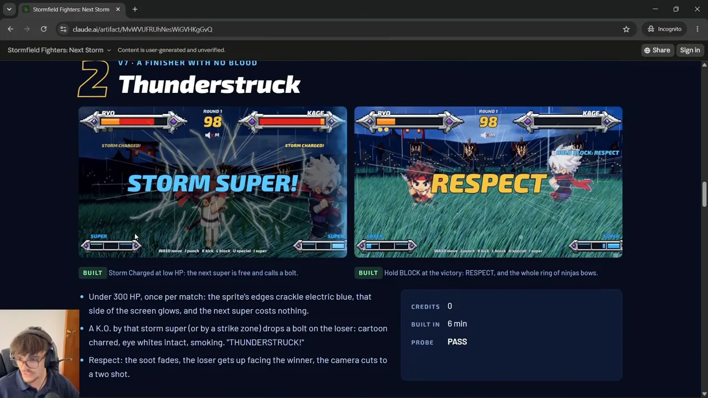
세 번째 Ninja Crowd에서는 관중이 경기에 끼어들어요. 왼쪽 실제 화면 위쪽에 관중 구호 'KAGE! KAGE! KAGE!'가 떠 있어요. 아래 설명에는 가장자리로 밀면 닌자 셋이 튀어나와 다시 밀어 주는 '소프트 월', 멋진 플레이로 금색 게이지를 채우면 닌자가 쿠나이나 연막탄을 던져 주는 'Crowd Favor'가 적혀 있어요.
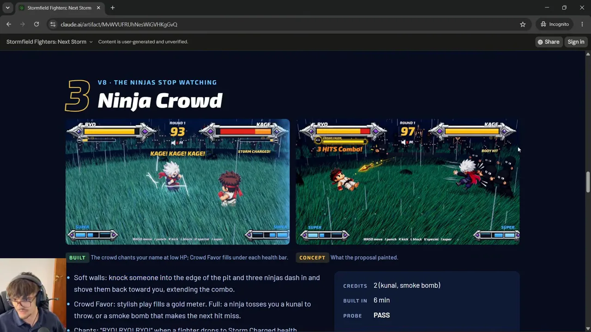
마지막 Through the Torii가 발표자가 가장 멋지다고 꼽은 제안이에요. 왼쪽은 슈퍼 피니셔로 상대를 도리이 문 쪽으로 날리는 'THROUGH THE TORII!' 장면, 오른쪽은 그 뒤 이어지는 신사 돌계단 아레나예요. 설명에는 경기당 한 번, 슈퍼 데미지에 150을 더하고, 돌 포장과 석등이 있으며 석등이 던질 소품이 된다고 적혀 있어요.
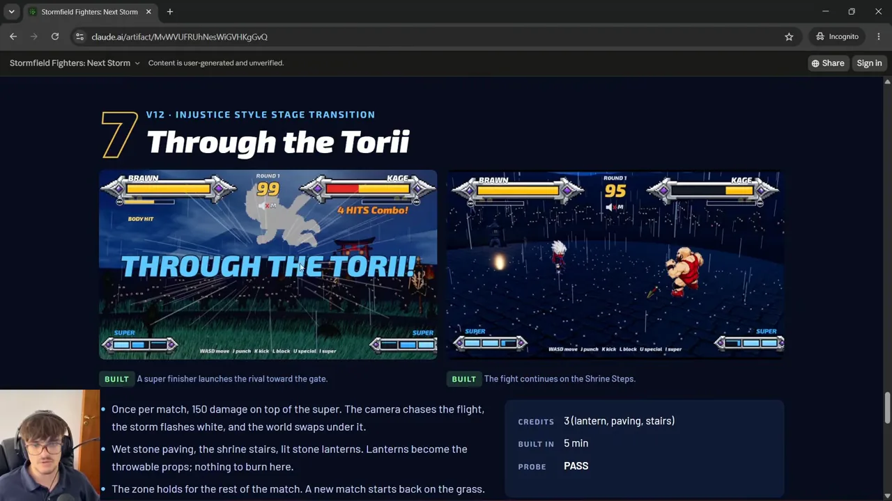
Claude 안에서 Codex로 이미지 만들기
페이지 끝의 'Claude, Codex, Godot and AutoSprite' 칸은 만든 과정을 다섯 단계로 정리해요. 1) Claude 서브에이전트가 약 40개 자료를 조사, 2) Claude 안에서 Codex로 아이디어마다 콘셉트 이미지 생성, 3) AutoSprite로 픽셀 아트 일곱 장과 불꽃 루프 하나(총 12크레딧), 4) 아이디어마다 규칙 노드를 만들어 Godot AI MCP로 조립하고 프로브로 검증, 5) 아이디어마다 커밋·태그·브랜치를 만들어 V6~V12로 저장이에요.
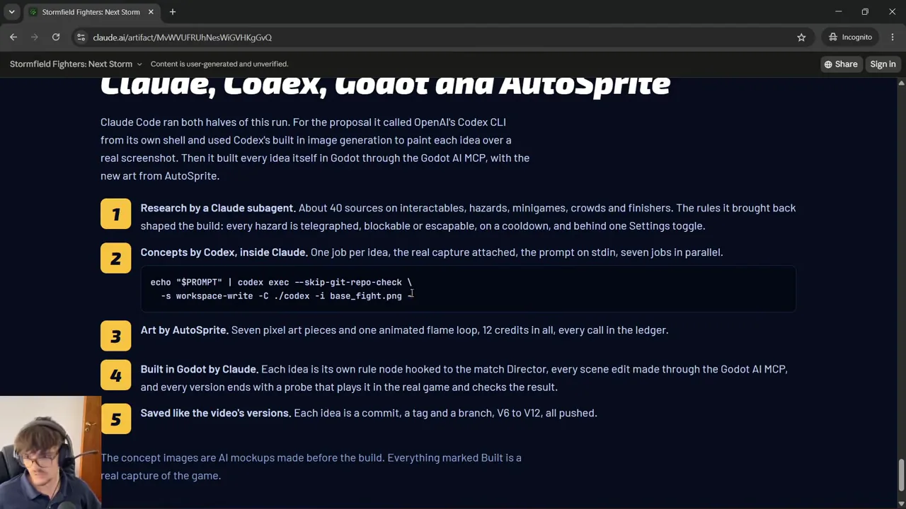
발표자는 Claude 에이전트에게 Codex CLI를 설정하라고만 하면, 이미 쓰고 있는 Codex 구독으로 Claude 안에서 이미지를 만들 수 있다고 정리해요. 그리고 일곱 개 제안이 모두 마음에 든다며 전부 구현하라고 지시해요.
최종 버전과 모바일
2차이자 마지막 버전이에요. 먼저 새로 넣은 4인 난투를 보여 줘요. 화면 위에 체력 바 네 줄이 있고, 발표자는 왼쪽의 Ryo를 조작해요. 왼쪽 위 상자에는 이번 버전에 1시간 56분, 사용량 약 3~4%가 들었고, 누적으로는 4시간 53분, 약 8~9%라고 적혀 있어요.
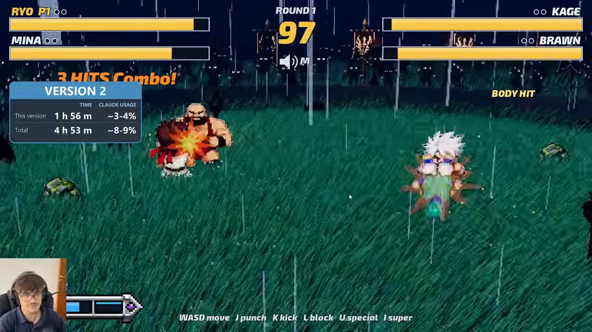
화면 속 숫자로 두 버전을 비교하면 이래요. 7개 기능을 더한 2차 버전이 1차 버전보다 시간도 사용량도 덜 들었어요.
대전 중에는 2차 버전의 기능들이 차례로 나와요. 아래 장면 위쪽에 관중 구호 'KAGE! KAGE! KAGE!'가 떠 있어요. 체력이 낮아진 캐릭터의 이름을 닌자 관중이 외치는 Ninja Crowd 기능이에요. 발표자는 상대를 가장자리로 밀어 닌자가 나타나는 장면도 보여 주려 하는데, 그 전에 상대가 쓰러져 버려요.
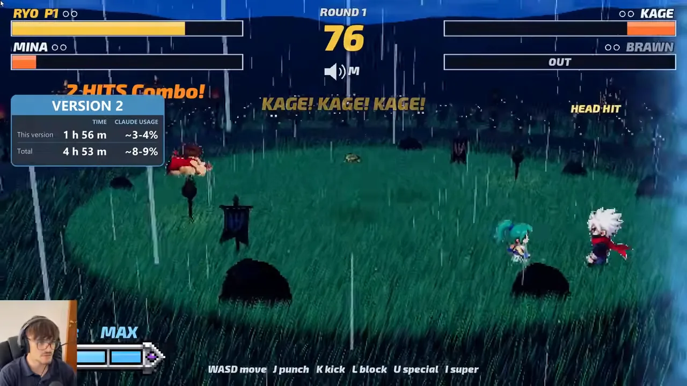
4인 난투가 너무 혼란스러워 발표자는 1 vs CPU로 바꿔 나머지 기능을 보여 줘요. 점프, 바위 집어 던지기, 번개, 그리고 도리이 통과로 바뀐 돌바닥 아레나까지 나와요. 마지막으로 안드로이드 폰에서 돌리는 모습이에요. 왼쪽 아래 조이스틱과 오른쪽 아래 둥근 버튼들이 GDD의 모바일 HUD 콘셉트 그대로예요.
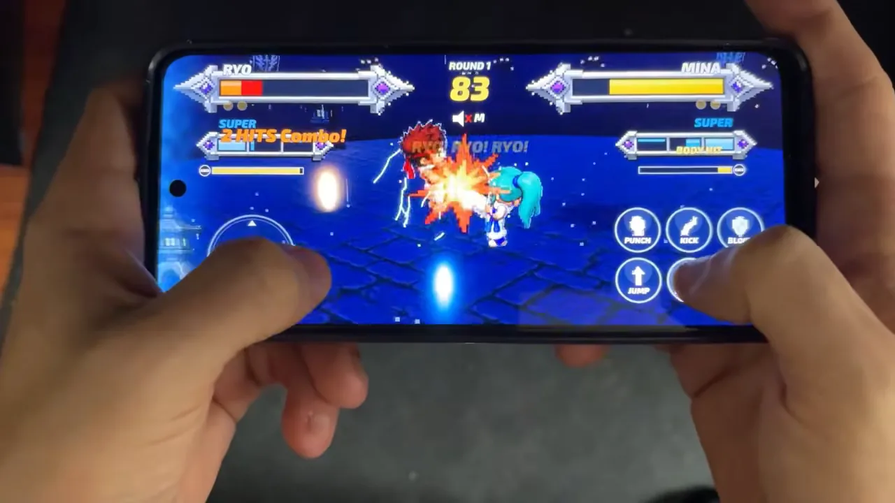